Les applications Web
Structure et concepts d’une application Web
Nicolas Giraud

Les enjeux d'une application Web moderne
Appelet / client lourd
Application web

Application web multidevice
Navigateur unique
Navigateur multiple
Les années 2000
Le SOA
Application web dynamique
Introduction des web services
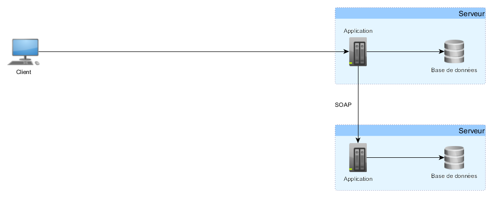Gestion centralisée des échanges
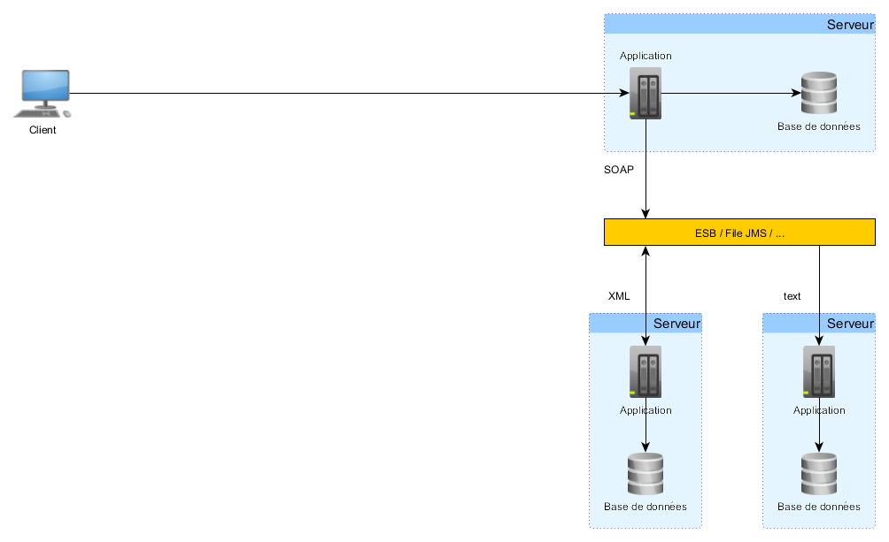Globalisation des SI
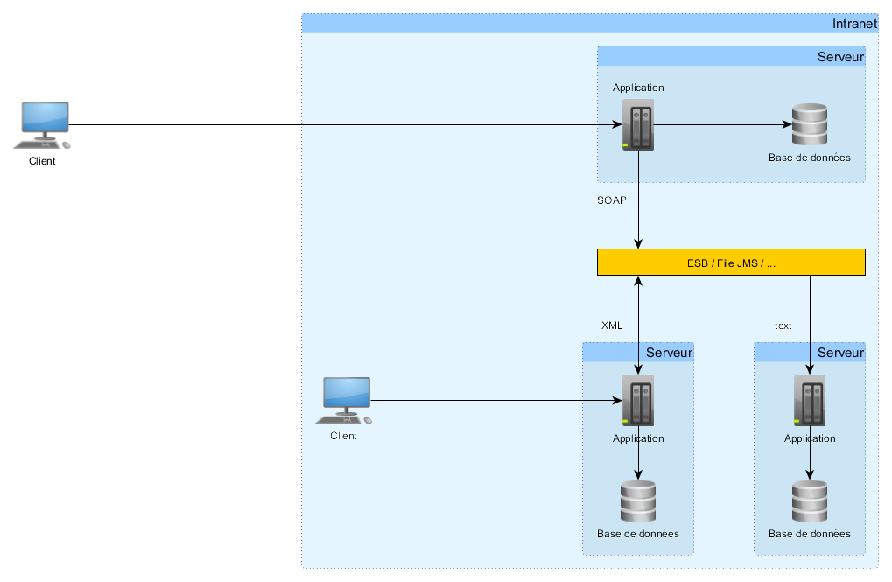Les années 2000
Le MVC
Le MVC
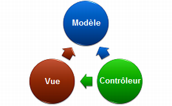Implémenter des pages dynamiques coté Serveur
- Java - JSP
- .Net - ASP
- PHP
Struts / JSF
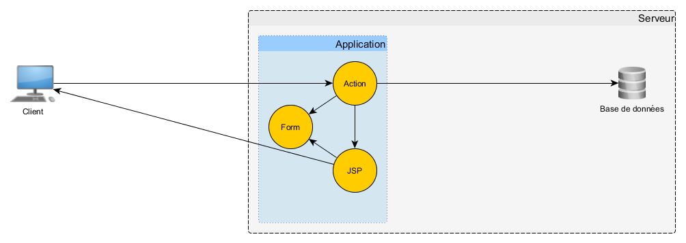Séparation des fonctions
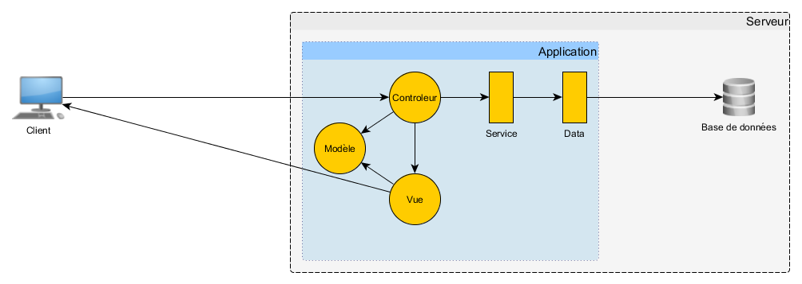Architecture applicative en couche
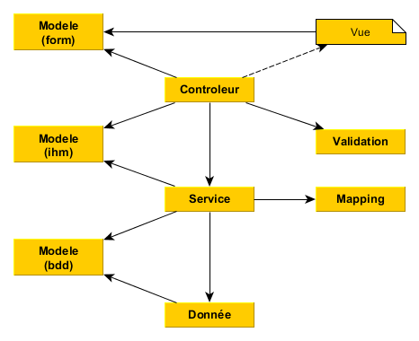Les années 2010
L'ère de la mobilité
Les multi-site
Chaque device son application
Progressive enhancement

Responsive Web Design

Universal JS
Les années 2010
Javascript dans tous ses états
Javascript, l'explosion
Dans les navigateurs
Dans les devices mobile
Coté serveur (Node JS)
En application lourde
ECMA - La Norme JS
ECMA Script 4
ECMA Script 5
ECMA Script 6 (JS 2015)
ECMA Script 7 (JS 2016)
Les années 2010
Les patterns de développement
MVP - MVVM

Flux

Les années 2010
Les framworks avancés


...
Les années 2010
APIboom
SOAP vs Rest
- XML vs JSON
- protocole vs norme
- SOAP est structuré
- Rest est stateless
- Rest utilise HTTP
SOAP vs Rest
Vers les architecture microservices
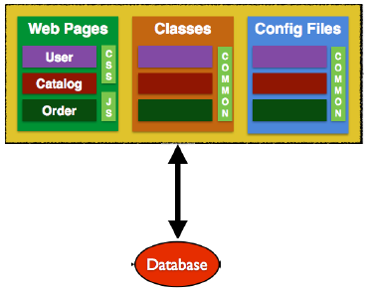Vers les architecture microservices
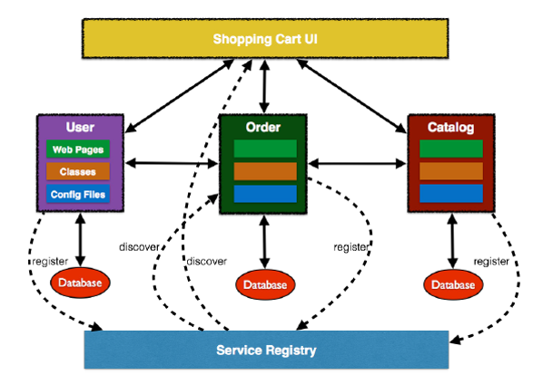Une ou deux applications ?
Le backend et le frontend
Frontend - Backend
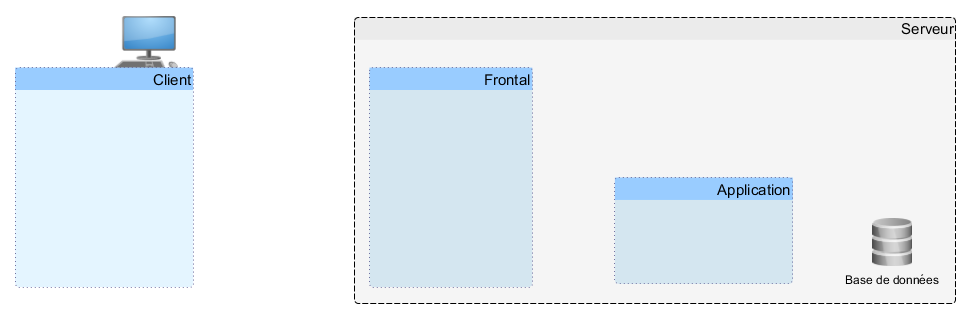Frontend - Backend
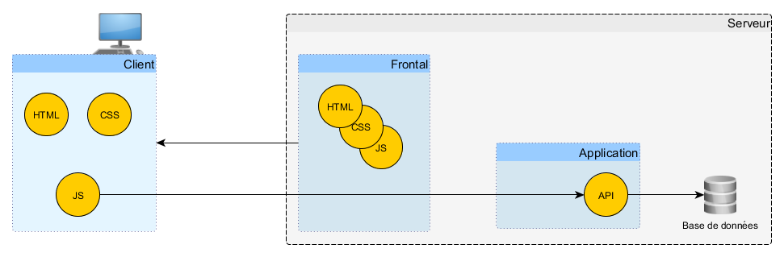Frontend - Backend

Architecture applicative en couche
Architecture applicative en couche
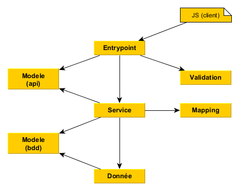Architecture hexagonale
Vers le Domain Drive Developpement (DDD)
Adapté aux microservices
Architecture hexagonale
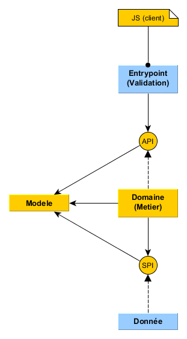Architecture hexagonale
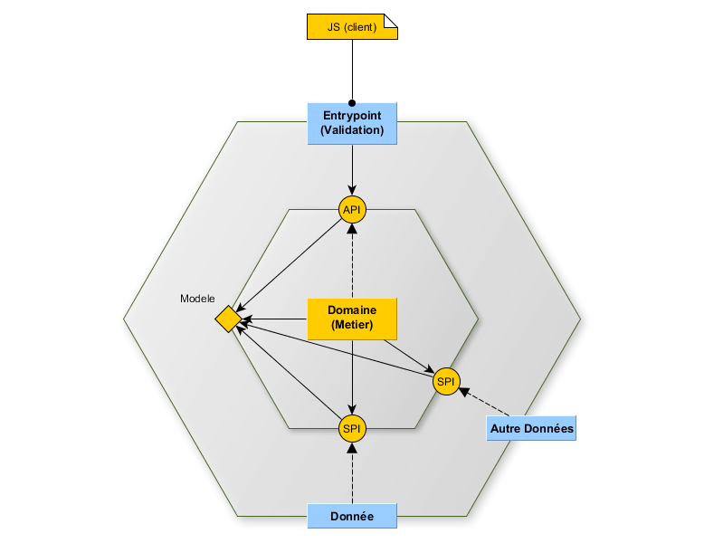Architecture hexagonale
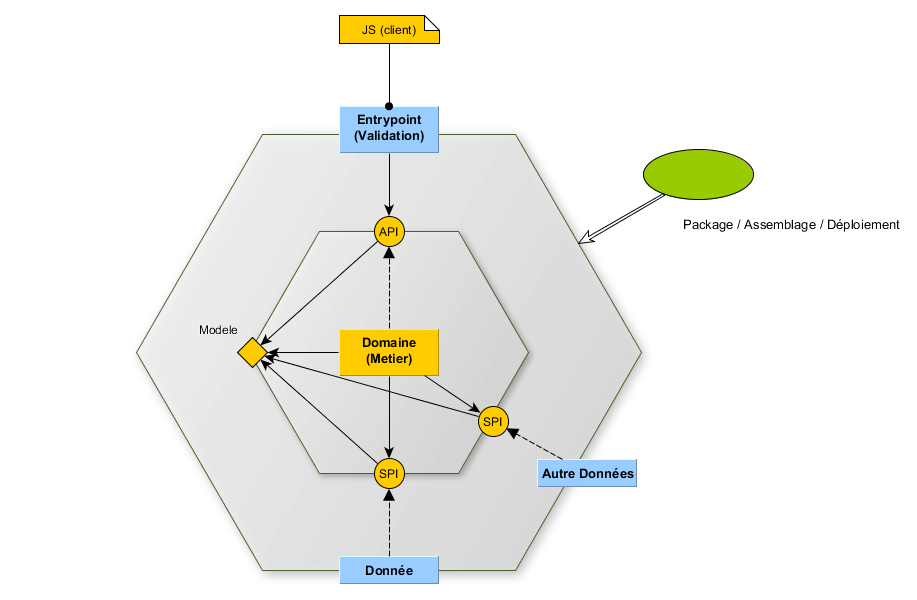Revolutions
- Du client lourd au client web
- Multi (device, navigateurs)
- Javascript, Typescript, etc...
Démultiplication des complexités
- Complexités Frontend
- Complexités Backend
- Complexités Infrastructure
Stabilisation des backends
- Concepts ancrés (REST)
- Architecture applicatives fiable
- Frameworks "historiques"
Et demain ?